東京弁当
Tokyo Box
Empanado de carne suína, refogado de carne bovina ao molho de soja, salmão grelhado, pãozinho cozido ao vapor recheado com carne suína e repolho, Missôshiru e arroz branco.
Favorito dos clientes
健二レストラン・日本の伝統料理
Do Teishoku ao Yakisoba, do Ramen ao Domburi — a essência da culinária japonesa servida com autenticidade e carinho no coração do Brasil.
Nossa história / 私たちの物語
O Kenji Restaurante Oriental nasceu em 2018 com a missão de preservar a autêntica culinária japonesa em São Paulo. Uma história de tradição, superação e amor pelos sabores do Japão, servidos com qualidade e preços justos no coração da Avenida Paulista.
De origem familiar, o restaurante manteve seu compromisso com a excelência mesmo diante dos desafios da pandemia e da forte concorrência da região — aproximando seus clientes da rotina gastronômica vivida no Japão.
メニュー
Explore nossa culinária japonesa tradicional — pratos autênticos com sabores que transportam você direto ao Japão.
Yakisoba — macarrão frito com legumes e verduras
Lamen — macarrão chinês em caldo
Udon — macarrão grosso de farinha de trigo


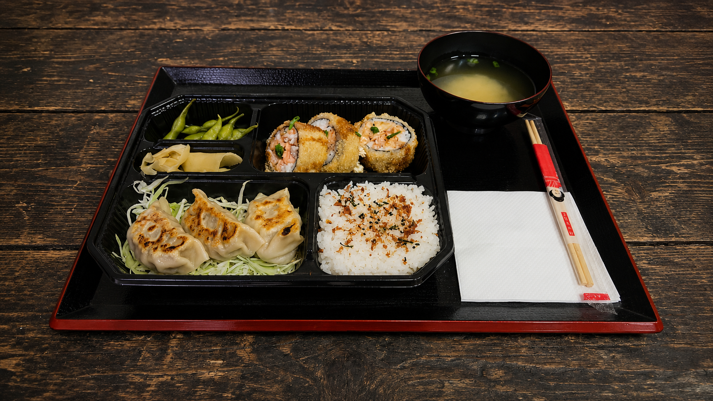


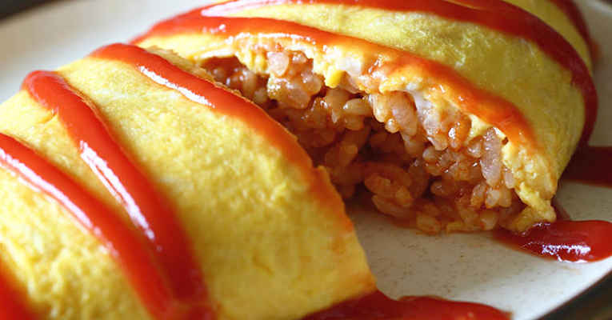

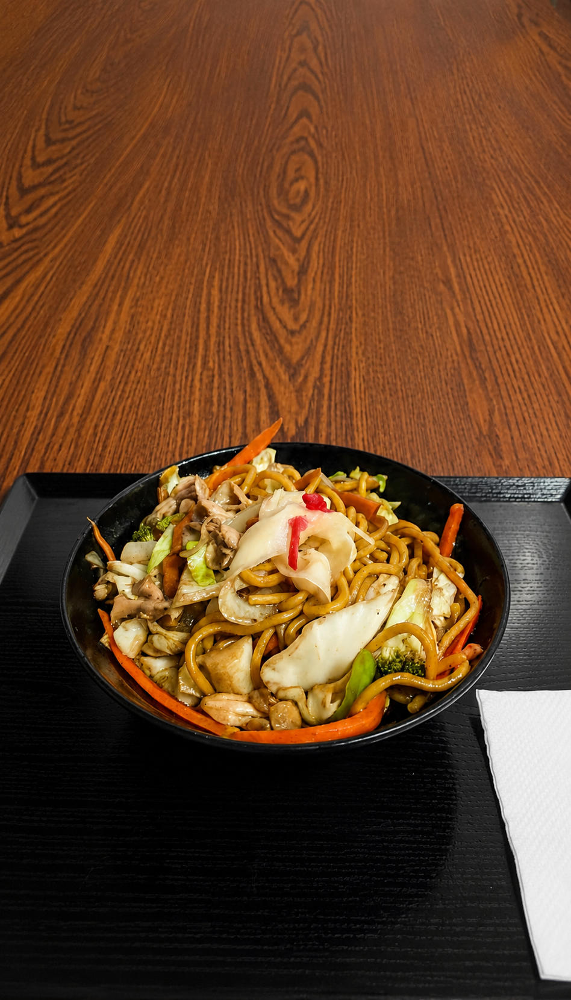


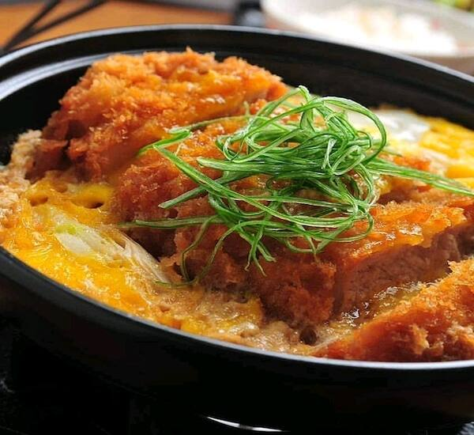
.png)
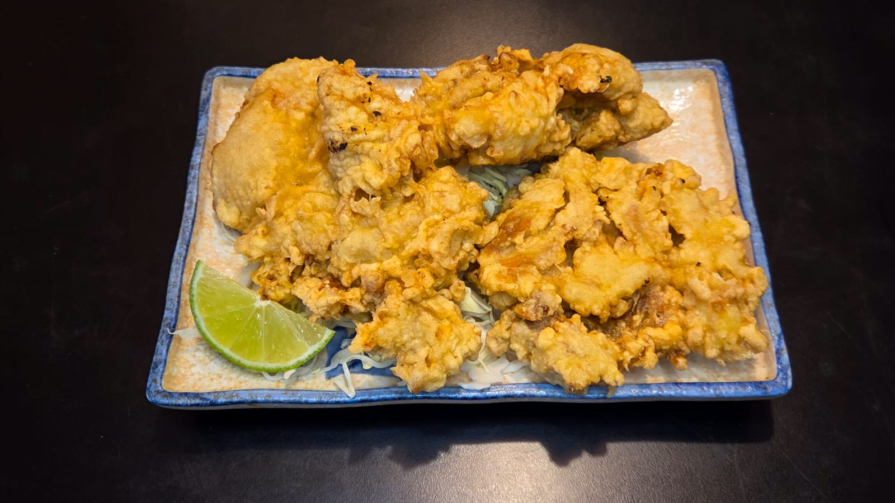
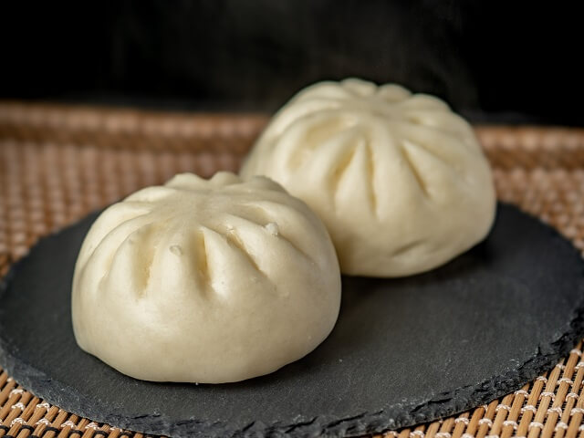
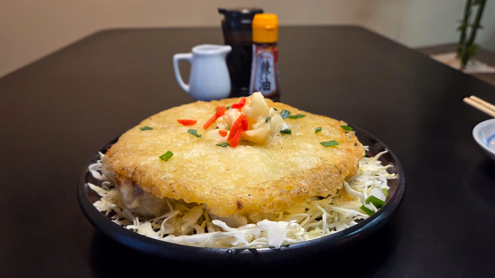

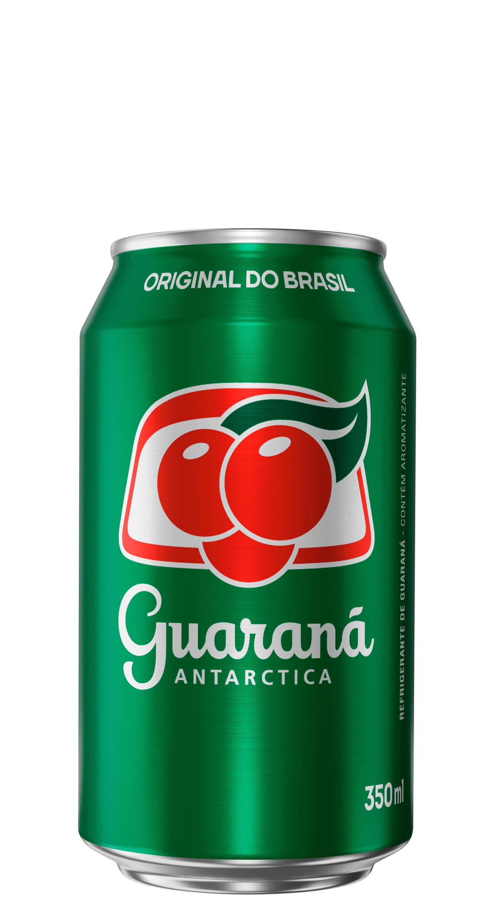
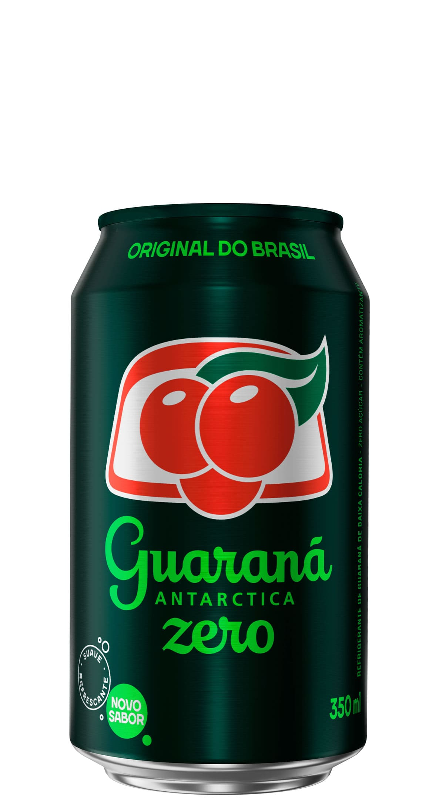
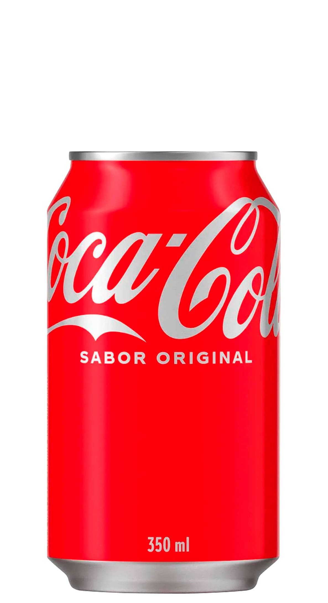
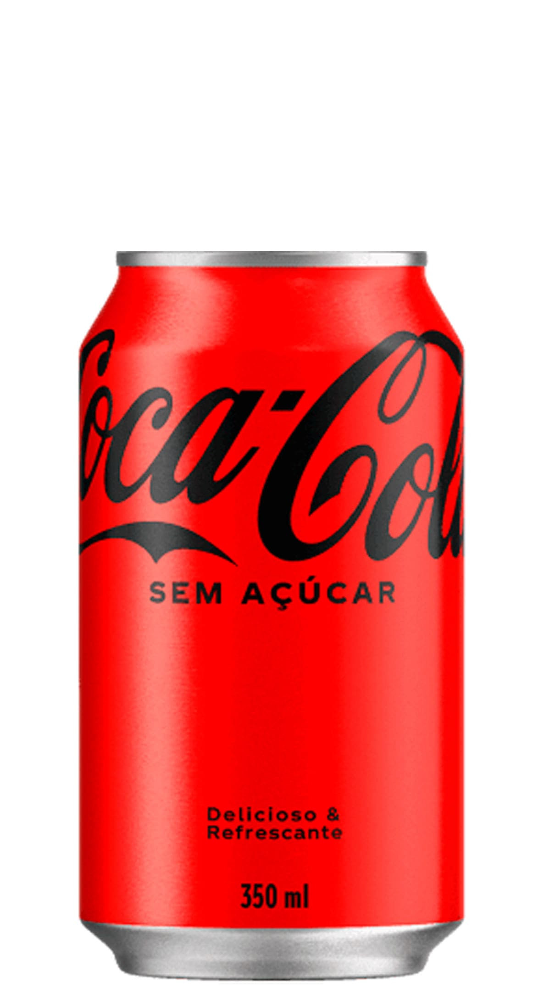
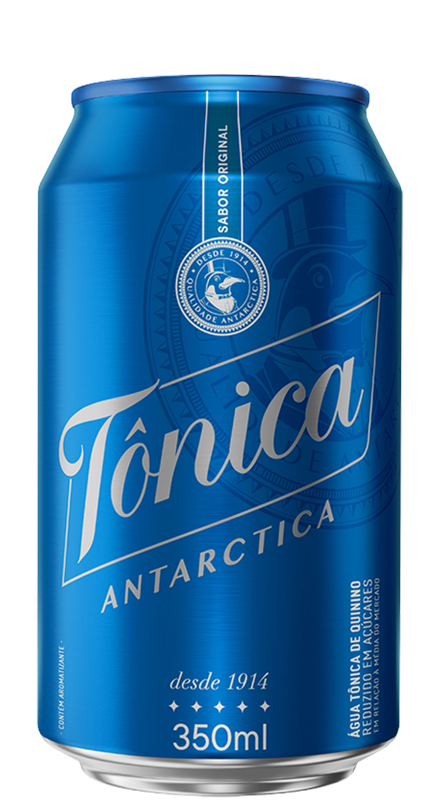
さらに注文
Os pratos mais apreciados pelos nossos clientes — preparados com tradição, ingredientes selecionados e dedicação artesanal.
Empanado de carne suína, refogado de carne bovina ao molho de soja, salmão grelhado, pãozinho cozido ao vapor recheado com carne suína e repolho, Missôshiru e arroz branco.
8 unidades de pasteizinhos japoneses recheados com mix de carne suína, bovina e repolho, fritos até dourar com casca crocante e interior suculento.

Macarrão chinês em caldo rico com panceta à moda oriental, ovo cozido, alga marinha e alho poró.
デリバリー
Peça pelo iFood e receba a culinária japonesa autêntica do Kenji direto na sua casa.
Cardápio completo com todos os pratos disponíveis no iFood
Pedir no iFood agoraコンタクト
Domingo a Sexta-feira
11h00 – 15h00
Sábado: fechado
Av. Paulista, Bela Vista
No coração de São Paulo, dentro da galeria comercial do número 1274.
Ver no GoogleVenha conhecer o Kenji Restaurante Oriental e desfrutar de uma autêntica experiência da culinária japonesa em uma das regiões mais movimentadas de São Paulo.
Para reservas, dúvidas ou informações sobre nossos pratos, entre em contato pelos canais abaixo:
Acompanhe novidades, promoções e os pratos do dia no nosso Instagram.